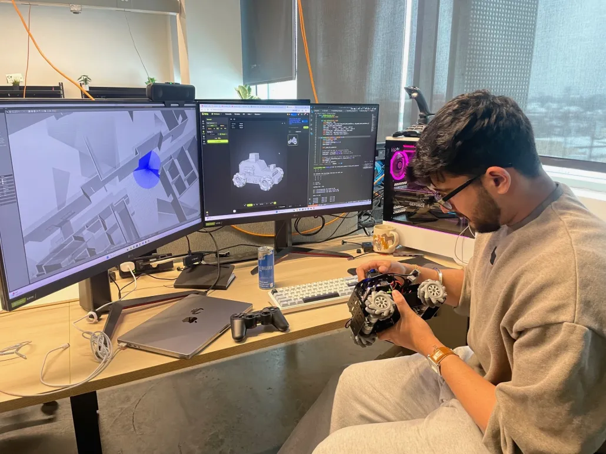
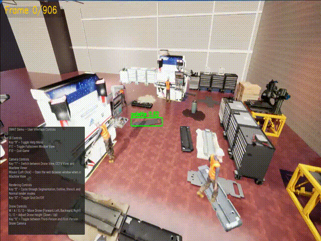
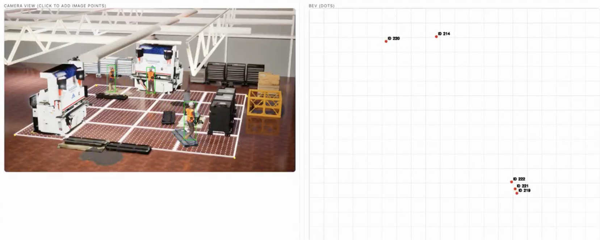

INARA
A low-cost indoor robot platform that pairs learned navigation with a safety fallback.
Explore INARAI am an Aerospace Engineering honors student at the University of Cincinnati with a Computer Science minor. I work across autonomous systems, computer vision, digital twins, and immersive technology.
See my work Contact me
A low-cost indoor robot platform that pairs learned navigation with a safety fallback.
Explore INARA
Digital twinA live, spatial model connecting building information, data, and XR interfaces.
Explore Digital Futures
Computer visionA prototype that turns person detections into useful top-down movement data.
Explore Spatial Analytics